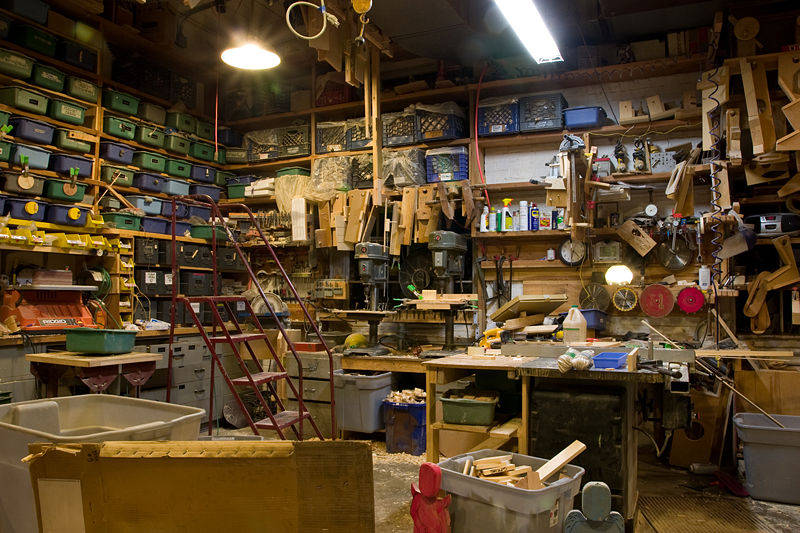
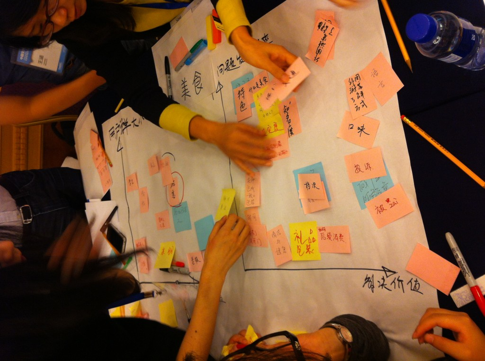
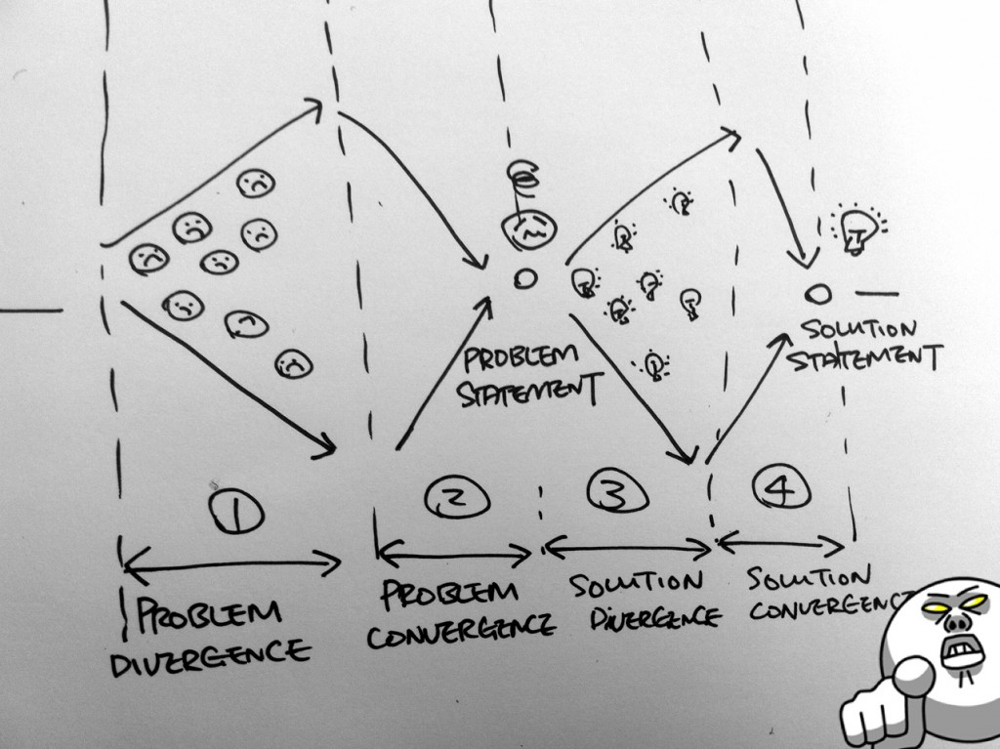
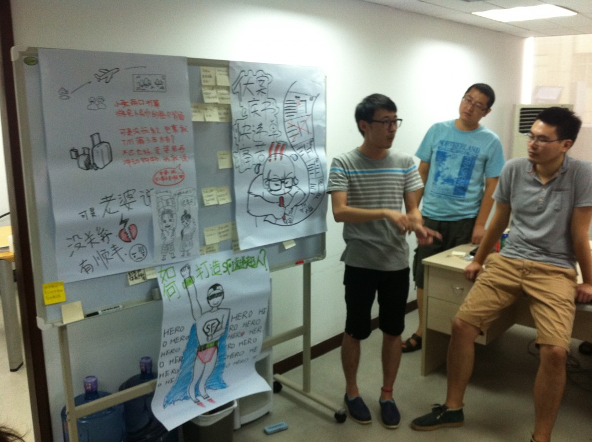
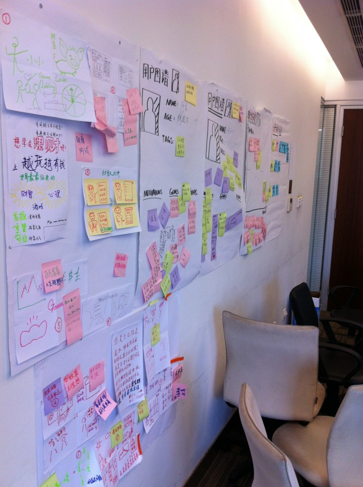

在设计活动的上下文中，工作坊已经成为被广泛使用的词汇，在国内主要的体验设计会议中被用于区分主题讲演（Keynote）的便是“工作坊”（Workshop）。
而对于这个词的使用，在多次设计会议中似乎都有所误读，本文的目标是帮助大家理解工作坊到底是一种什么样形式的活动。
传统概念
工作坊（Workshop）是源自于工业时代的生产工作室，它往往由一个密闭的空间、陈列的工具和产出物、和一个工作台组成。在一个传统意义上的工作坊中最直观的是满墙的工具以及工作台中央正被精心雕琢的器物。

而在教育领域，工作坊被定义成一种紧凑的教学模式，着重体现互动以及信息在一组参与者之间的交换，通过这样的方式获得知识和经验。
和传统的一些教学方法，如课堂授课（Lecture）、小班教学（Tutorial）不同的是，工作坊式教学在短时间内让参与者获得实操经验，并学会合作和协作。
同时，协作设计的出现使得Workshop也可以成为商业领域一种快速让参与人达成一致、并制定共同目标的有效方法，特别是海外，工作坊在商业组织中非常常见。
工作坊的特点
从最原生的教育学概念，以及结合其在商业领域的运用来看，工作坊所需要具备的几个特点是：
- 少数人的（Small）
- 系列性的（Serial）
- 紧凑的（Intensive）
- 互动的（Interactive）
- 有产出物的（Productive）
少数人的
互动性的代价是它可能导致失控和没有结果，于是一个工作坊中工作组的数量应该被控制，通常，一个小组的人数不超过7人，至于7人数字如何得出，它只是个经验数字而已。

系列性的
工作坊的活动应该是由有节奏的若干活动共同组成，从而成为一个有延续性的活动集合。这样做的好处是，工作坊从某种意义上说，去除了“领导”的左右，缺乏强力的引导，冗长而漫无边际的讨论让参与者失去兴趣和耐心，最终变得不了了之。而有间断的系列性活动可以让工作小组充满乐趣和动力。
这种系列性还体现在某种设计逻辑上，我们通常需要一个有结构化（Constructive）的逻辑来串联工作坊中的活动，例如在设计思维（Design Thinking）中的Inspiration（灵感），Ideation（构思），Implementation（执行）三阶段设计活动（参考这里），或者如D.School推出的
中共情（Empathize），定义（Define），Ideate（构思），Prototype（原型），Test（测试）五阶段设计活动等。以下是我最常用的一个双菱形逻辑：

我们需要在一开始，让参与者了解某种设计逻辑，同时也是活动逻辑，而不是千篇一律地进行小组讨论仅此而已。
紧凑的
拥有了较为合理的逻辑贯彻活动本身，由于时间的关系，我们希望尽可能缩短工作坊的时间，让过程更加紧凑，一个集中紧凑的学习氛围可以让参与者在过程中获得更多收获。就像Agile或Scrum中的迭代或冲刺，每个环节我们都需要展示产出物：

这个概念特别像Scrum中Sprint冲刺，一个原本冗长的教学活动变成一系列有前后逻辑相关的活动集合（多个Sprint），这使得所有人在每个“Sprint”中都全力冲刺。
互动的
工作坊和传统方式最大的不同是“互动”，它不应该是一对多的夸夸其谈，而更多是让听众有机会能够通过一个精心设计的活动过程，用互动的方式，理解传授者希望传授的内容。
互动性对工作坊内容提出了非常高的要求，即我如何能够用多个活动，达到让所有人明白事且有产出的结果？因此，只掌握一个头脑风暴是不足以达到这个目标的，事实上，在设计界各种群体性的设计方法层出不穷，一个好的工作坊设计者会从中选择合适的活动进行裁剪加入在不同目标的工作坊中。
在《101 Visual Meetings》等书中也可以得到一些启发，在D.School的这个页面中也可以找到一些。
有产出物的
这真像是Agile中的概念，每个迭代都应该有产出物，这些产出物应该可以被直观的展示。这些产出物记录着我们思考的过程，它让我们在更短的时间内，对有限的东西快速达成一致，一步一步地走向最终交付物。产出物应该被展示在墙上：

同时阶段产出物让参与者从一而终地了解活动的过程，像不断打磨似的形成决议，在过程中完成思考、尝试、和产出，加深对知识的理解，也激励大家走到最后。
对工具的要求
工作坊离不开工具，在这里工具的作用无外乎以下几种： - 鼓励互动的； - 记录可直观展示的产出物； - 帮助过程紧凑进行的；
因此，当你问某种工具是不是必要时，只要看它：是不是能够鼓励互动？是不是能记录直观展示的产出物？是不是能够帮助过程紧凑进行？就可以做出判断，从这个角度讲，我们才说，在这样的工作坊里，计算机是最不必要的工具。
关于工具的使用，可以参考我之前的博客，其中专门讲到的工具。
对引导人的要求
引导人是工作坊中的关键一环，特别是当你准备通过一个工作坊来传达你的观点时。这里的难度在于，你不能过于售卖你的观点，参与者可能在参与过程中失去乐趣和耐心；你也不能过于淡化你的观点，参与者可能在参与过程中失去目标和方向。
逻辑上来看，你无非是要做一个“强有力的（强化观点）有趣人（过程有趣）”，因此，你需要非常精炼地告诉大家你希望大家学到什么，对时间和场面有强力的把控，同时又足够风趣调动气氛。你所做的不是把所有人培养成跟你一样的人，而是构造出一个个用你的逻辑制作的培养皿，看每个活跃的细胞会成长成什么样。这才是工作坊的初衷——应用你的某些逻辑，辅以工具和环境，加上参与者自己的能力，得出每个人自己的结果。
对参与者的要求
你需要在一开始就要对参与者说明的是：你们不是来看真人秀的，你们是来玩的。请参与工作坊的同学能够放下固有的偏见，尽可能地和人互动和协作，也许这不是你正常的工作体验，但是这个过程结束之后，确实能够体会到高速协作的乐趣。
写在最后
我参加了近四年的各种会议，在不同场合讲演和做工作坊，分享我的故事和经验，可我越来越觉得，这变成了一个秀场，上演的是不同内容的真人秀，主题都是“如何成为我”——我把旧故事装载新瓶子里搅拌，夹杂各种理想主义的作料，放在PPT里“叮”一下，冠一个看起来很美好的标题，不忘在最后放一些自己都不再多看的“干货”，这就是我的真人秀。
而我之所以喜欢工作坊的形式，是你可以看起来什么都不太做，却可以让参与者真正体会到你的思维。
并不是要挑战各大会议冠以“工作坊”形式的分享，只是想谈谈我对“工作坊”的理解，这是我工作的一部分，希望越来越多的人用这样的方式和人协作。